« Nous avons passé un week-end formidable nous et notre famille au château. Un lieu incroyable. »
★★★★☆4,4sur Mariages.net · 6 avis
Château de Vixouze, vos réceptions dans le Cantal
Un monument historique perché à 780 mètres, une vue à 360° sur la vallée de la Cère et les Monts du Cantal, quatre espaces de réception de 50 à 350 invités et onze chambres. À 2 minutes de la gare de Polminhac, à 18 minutes d’Aurillac.
- Monument historiquefondé vers l’an 980
- Une vue à 360°à 780 mètres d’altitude
- De 50 à 350 invitésassis ou en cocktail
- Onze chambresde 16 à 30 adultes
Le domaine
Quatre espaces, un seul domaine
 01Dîner
01Dîner
Le Pavillon au Roy
200 m², jusqu’à 280 en cocktail · le dîner et la soirée
Une charpente de 500 ans pour le dîner et la piste de danse, jusqu’à 200 convives assis.
Voir le Pavillon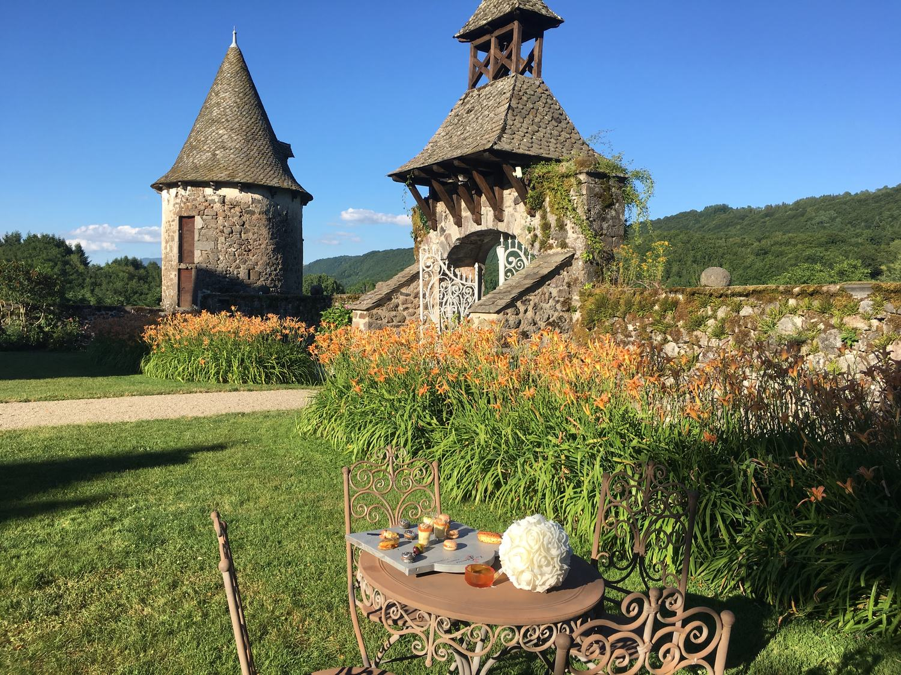
02RecevoirLa Cour Médiévale
500 m², jusqu’à 350 en cocktail · le cocktail en plein air
Cinq cents mètres carrés entre deux donjons et trois bassins, pour le cocktail en plein air.
Voir la Cour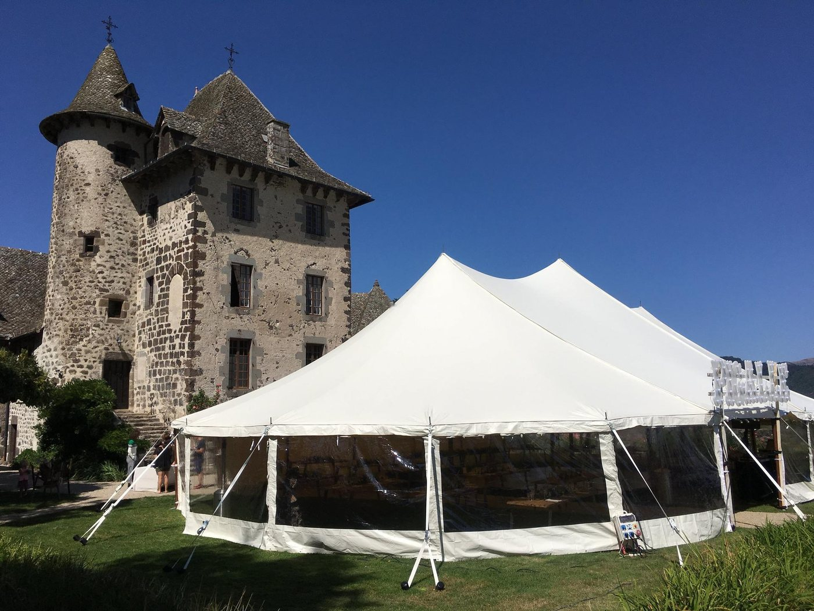
03CélébrerL’Esplanade des Tilleuls
300 m², jusqu’à 200 pour la cérémonie · la cérémonie laïque
La cérémonie laïque sous les tilleuls, face à la vallée, jusqu’à 200 personnes.
Voir l’Esplanade 04Accueillir
04Accueillir
La Galerie des Arts
150 m², jusqu’à 120 en cocktail · le vin d’honneur et les enfants
Le vin d’honneur à l’abri, les petits dîners et le coin des enfants le soir venu.
Voir la GalerieUn seul événement à la fois : le château entier est à vous.Organiser votre mariage
Votre mariage
Tout un week-end au château
Les couples le racontent : on arrive la veille, on repart le lendemain après le brunch. Entre les deux, le château et ses onze chambres sont à vous.
- La veille
Vos proches prennent leurs chambres au château, le repérage des prestataires se termine, la décoration se monte.
- Le jour
La cérémonie sous les tilleuls, le vin d’honneur dans la Cour Médiévale, puis le dîner dans le Pavillon au Roy et la piste de danse jusqu’à cinq heures.
- Le lendemain
Le brunch dans la cour avec ceux qui ont dormi sur place, avant un départ à dix-sept heures.
- Et s’il pleut
Le vin d’honneur passe dans la Galerie des Arts et la tente de l’esplanade abrite la cérémonie, décidé au dernier moment.
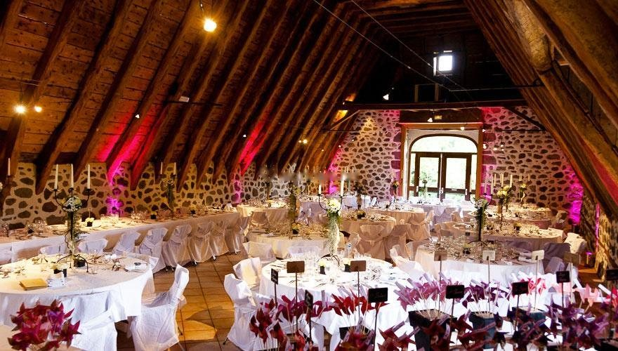
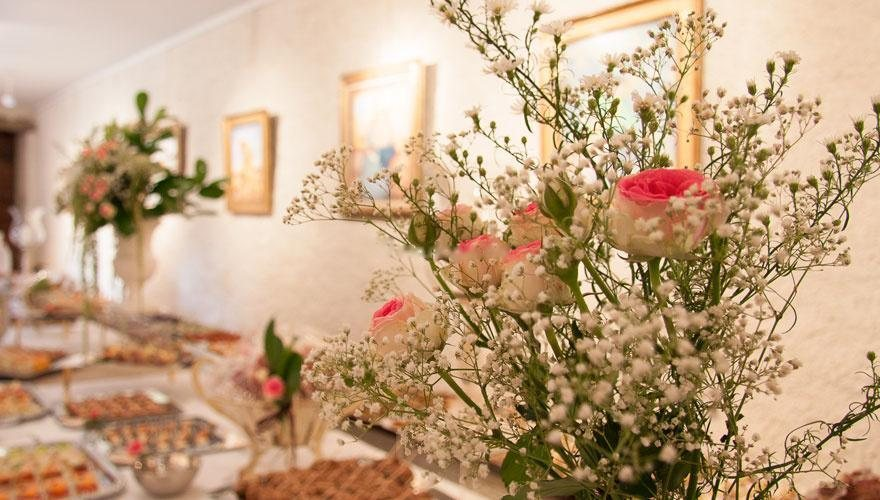

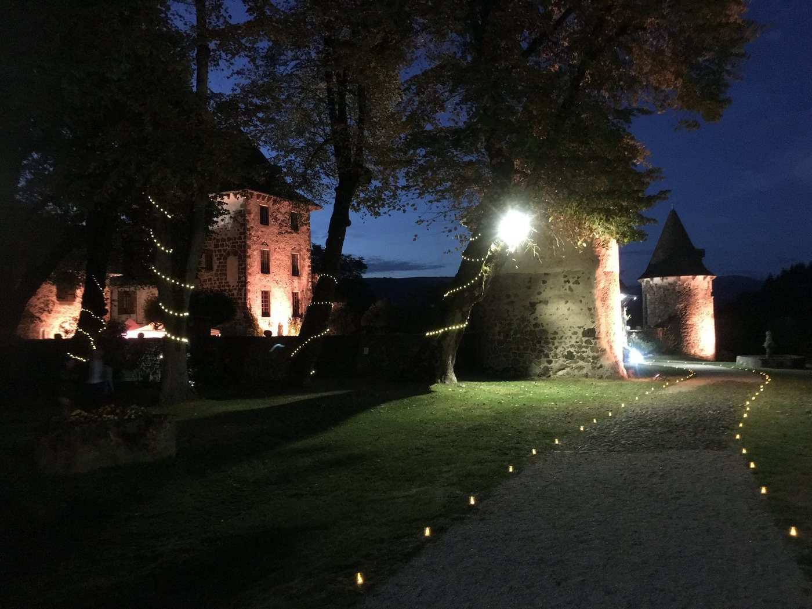
Compris dans la location
Ce que le château met à votre table
La location commence à 8 800 € et comprend les quatre espaces, le mobilier et les installations techniques. Le reste, ce sont vos envies : le château travaille avec des prestataires qui connaissent les lieux.
- 200 chaises pliantes
- Tables rondes de 8 et 10
- Tables de 6, 8 et 10 couverts
- Guéridons jupés et tréteaux
- Les formules

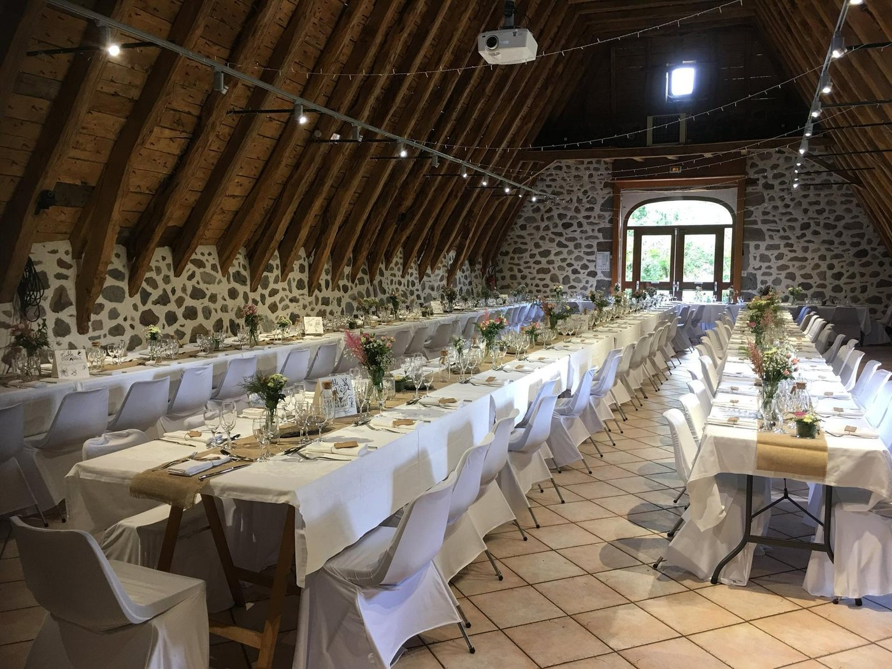
La vidéoprojection5 000 lumens, écran de 3 m sur 2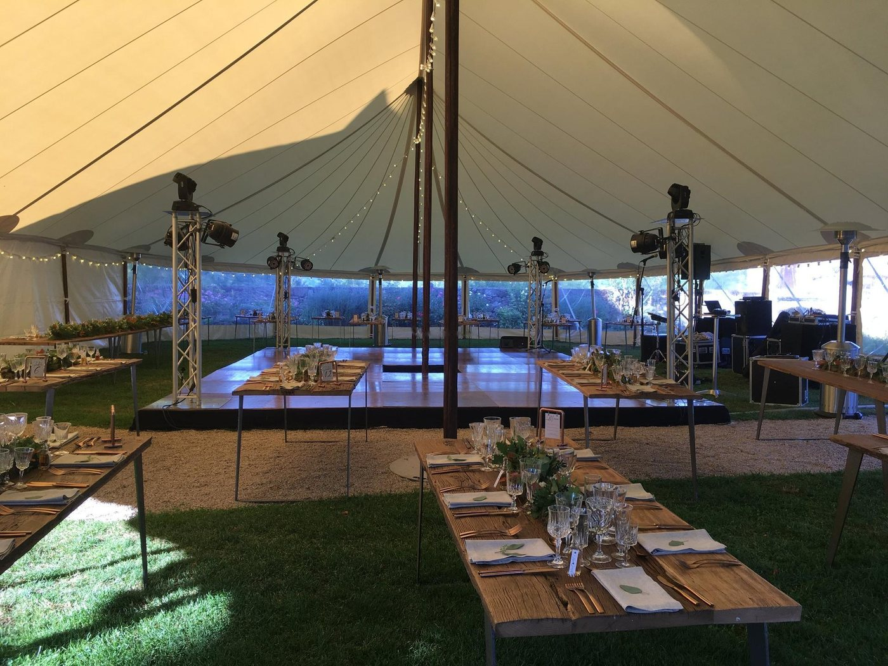
La sonorisationquadriphonique, micros HF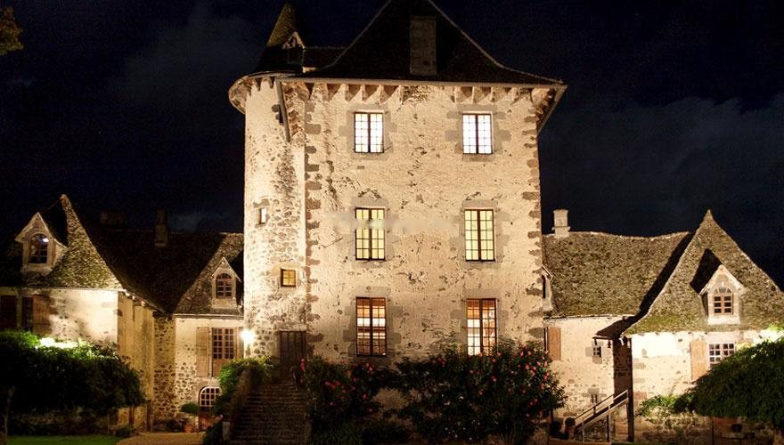
Les illuminationsdu château, en soirée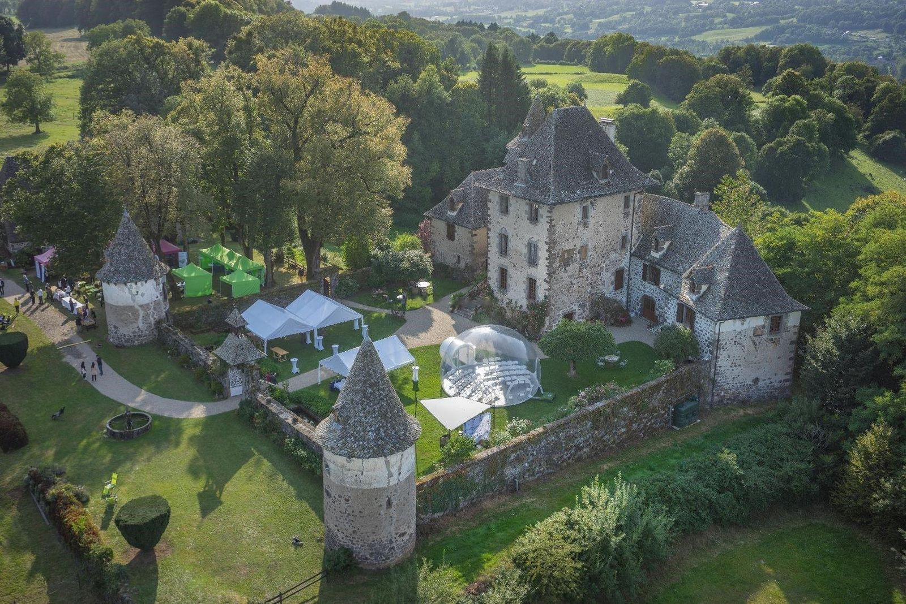
La navette de nuittrois heures ou toute la nuit
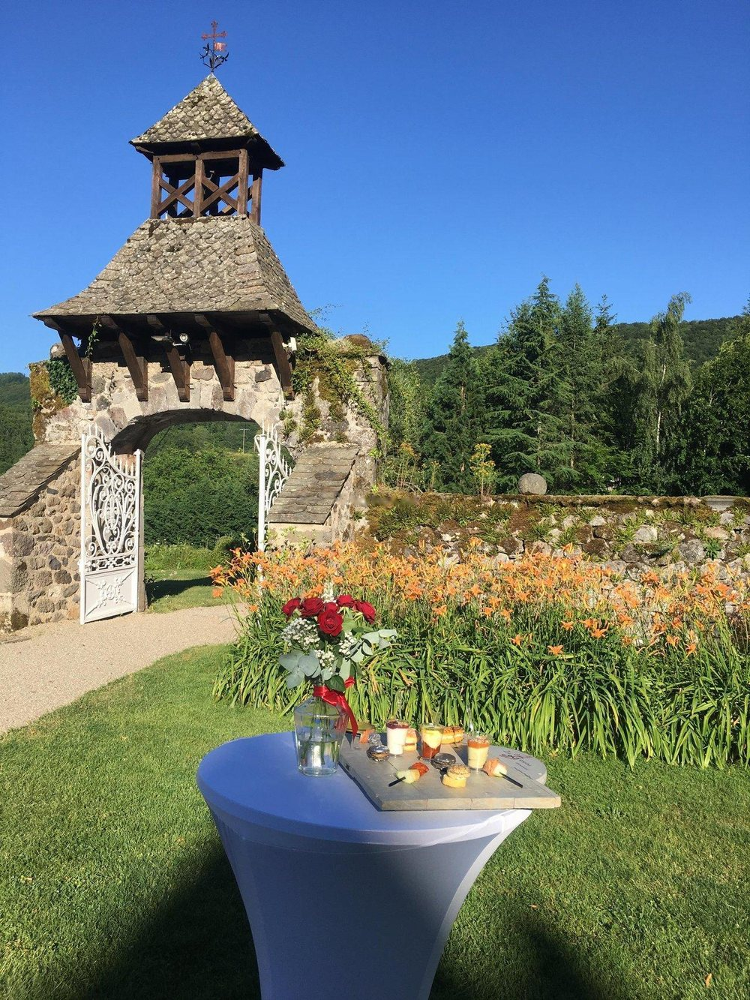
Vos hôtes
Une équipe de taille humaine
Le château se visite sur rendez-vous, toute l’année. La même équipe vous suit du premier repérage au brunch du lendemain : les couples en parlent mieux que nous.
- ★★★★★
Le propriétaire se montre très disponible tout au long de l’année qui précède l’événement et ses conseils sont très appréciables.
Anne, sur Mariages.net - ★★★★★
Une disponibilité très agréable de l’équipe en amont et pendant.
Isabelle, sur Mariages.net - ★★★★★
Un lieu incroyable, le cadre magnifique. Je vous recommande ce lieu sans hésitation.
Camille, sur Mariages.net
Dormir sur place
Onze chambres, pour ne pas reprendre la route
Une suite nuptiale de 70 m² avec son salon privé, sept chambres Premium de 15 à 30 m² et trois chambres dans la Tour : de seize à trente adultes passent la nuit au château. Toutes ont leur salle de bain privative, le wifi haut débit, la machine Nespresso et les produits d’accueil.
La suite nuptiale de 70 m²Sept chambres PremiumTrois chambres dans la TourDe 16 à 30 adultes
Les chambres se louent dans le cadre d’un événement au château.
Voir les chambres
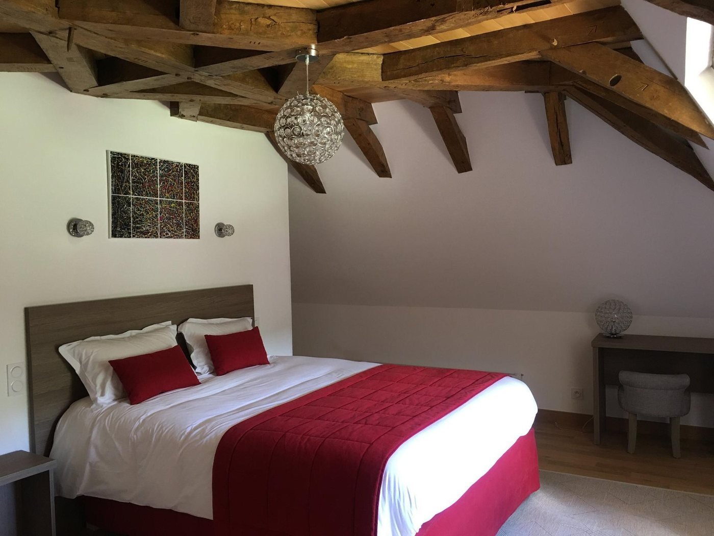
En images
Le château du jour à la nuit
Ils ont fêté ici
Ce qu’en disent les couples
« Le coup de cœur pour ce magnifique endroit dès les premières minutes de la visite. »
« Un cadre unique, le château authentique avec la cour d’honneur, la salle pleine de charme avec ses poutres apparentes. »
« Une expérience inoubliable dans un superbe château de taille humaine. »
« Le Château de Vixouze est un lieu qui vous fait voyager dans le temps, l’emplacement avec la vue sur la vallée et les montagnes, la décoration du château avec ses chambres rénovées, les paysages et l’éclairage de nuit est parfait. »
Pour vos invités
Venir au château
Les activités à voir
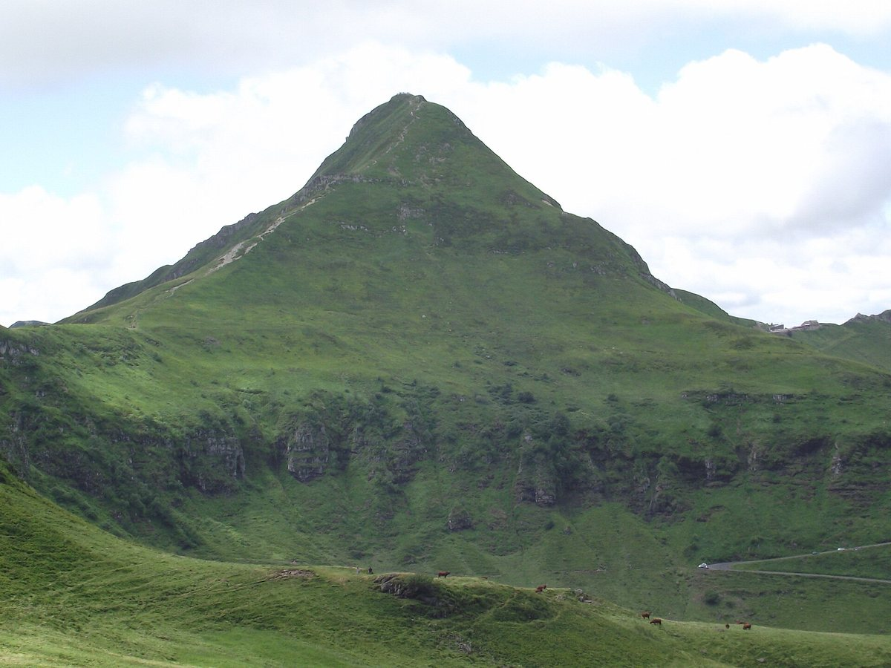
Le Puy Mary, Grand Site de France
Le pic et les estives, à 43 minutes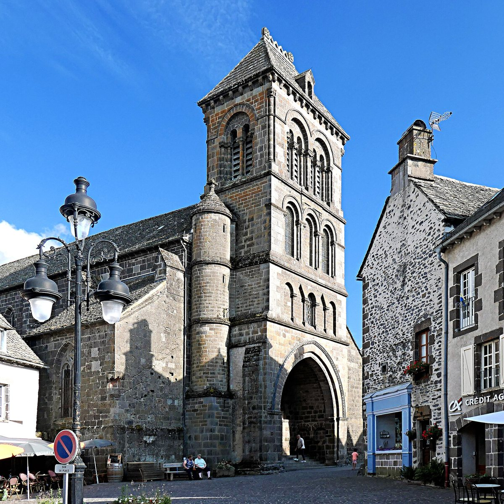
Salers
Un des plus beaux villages de France, à 1 heure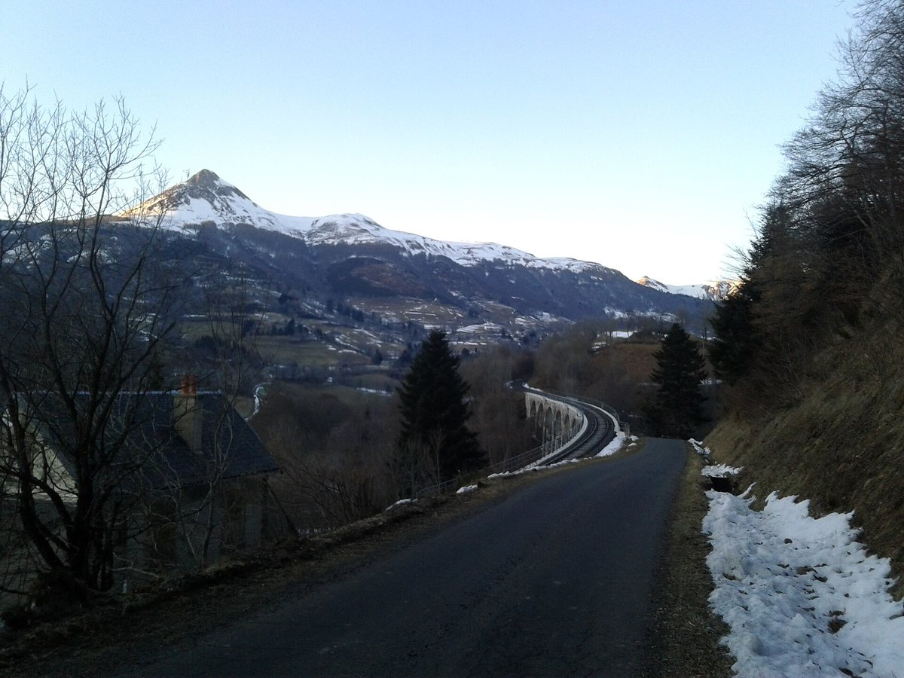
La vallée de la Cère
Le viaduc et le Puy Griou, au pied du châteauPhotos Wikimedia Commons. Le Puy Mary : Jmp48, CC BY-SA 3.0 · Salers : Pom', CC BY-SA 2.0 · La vallée de la Cère : Awkiku, CC BY-SA 4.0.
Mille ans d’histoire pour votre fête
Un mariage, un séminaire, un anniversaire : choisissez votre date, nous vous faisons visiter le château.
Vérifier une date
Votre date
Votre date est-elle encore libre ?
Le château ne reçoit qu’un seul événement à la fois. Ouvrez le calendrier : vous voyez tout de suite les jours encore libres, puis vous nous envoyez votre demande en deux clics.
Une question avant tout ? Écrivez-nous
- 1Votre datele calendrier montre les jours encore libres
- 2Votre événementun mariage, un séminaire, une fête de famille
- 3Vos invitésde 50 à 350, assis ou en cocktail
- 4La visitenous vous rappelons pour la caler
Questions fréquentes
Avant de réserver
Combien coûte une réception au château ?
La location du domaine commence à 8 800 €, selon la date, la formule et le nombre d’invités. Trois formules existent : le Pack Noces avec les essentiels, le Pack Premium qui ajoute les installations techniques, le Pack Cérémonie Laïque pour l’expérience complète. Appelez-nous au 06 77 18 46 62 pour un devis à votre date.
Combien d’invités peut-on recevoir ?
De 50 à 350 personnes. Le Pavillon au Roy reçoit jusqu’à 200 convives assis et 280 en cocktail, la Cour Médiévale jusqu’à 350 en cocktail, l’Esplanade des Tilleuls jusqu’à 200 pour la cérémonie. Le château ne reçoit qu’un seul événement à la fois : le domaine entier est à vous.
Peut-on dormir sur place ?
Oui : onze chambres accueillent de seize à trente adultes, dont une suite nuptiale de 70 m² avec son salon privé. Elles se louent dans le cadre d’un événement au château. Les familles nombreuses prennent les chambres de la Tour, jusqu’à quatre couchages.
Qui s’occupe du repas ?
Le château travaille avec des traiteurs partenaires, qui connaissent la cuisine du Pavillon au Roy et son office de préparation. Les prestataires référencés couvrent aussi le DJ, les fleuristes et les photographes. Dites-nous votre projet, nous vous mettons en relation.
Et s’il pleut le jour de la cérémonie ?
La Galerie des Arts prend le relais pour le vin d’honneur, en quelques minutes, sans rien changer au reste de la journée. La tente de l’Esplanade des Tilleuls abrite la cérémonie et la piste de danse.
Jusqu’à quelle heure dure la soirée ?
La musique peut se prolonger jusqu’à cinq heures du matin dans le Pavillon au Roy. Le départ se fait le lendemain à dix-sept heures. Une navette ramène vos invités, pour trois heures ou pour toute la nuit.
Où se garent les invités ?
Trois parkings privés accueillent plus de cent voitures sur le domaine, avec des places supplémentaires à proximité. La gare de Polminhac est à deux minutes, l’aéroport d’Aurillac à vingt-deux minutes.
Comment visiter le château ?
Le château est ouvert aux repérages sur rendez-vous. Choisissez une date dans le calendrier ou écrivez-nous : nous vous rappelons pour organiser la visite.